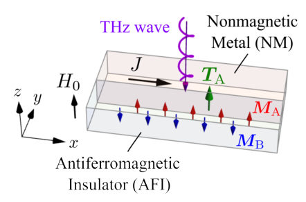
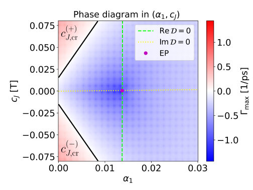
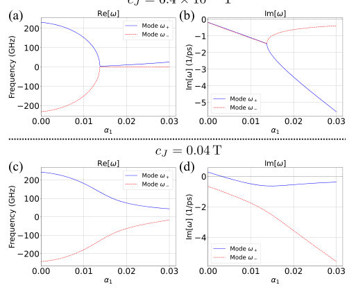

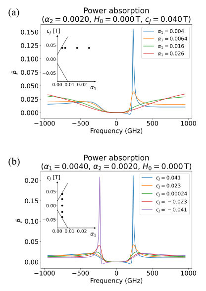
Authors: Angelo Esposito, Alberto Nicolis, Riccardo Penco
Type: theory · Category: other · PDF: https://arxiv.org/pdf/2607.06666v1
Analysis basis: full PDF text, analyzed in chunks
Topic relevance: Keldysh / 2PI / non-Gaussian methods 3/5 · analog quantum simulation 1/5 · correlated / nonlocal dissipation 1/5 · correlated cavity matter 1/5 · driven-dissipative phase transition 1/5 · methods for driven-dissipative 1/5 · non-equilibrium dynamics 1/5
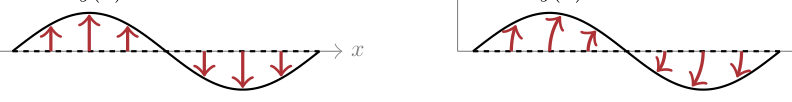
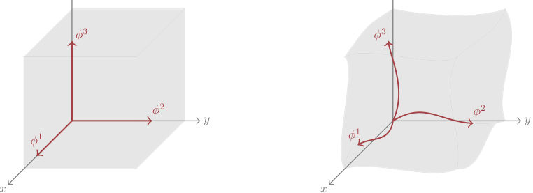
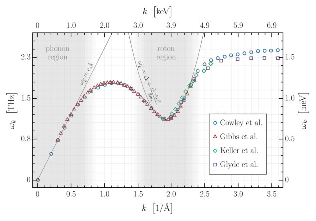
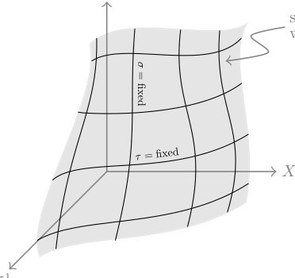
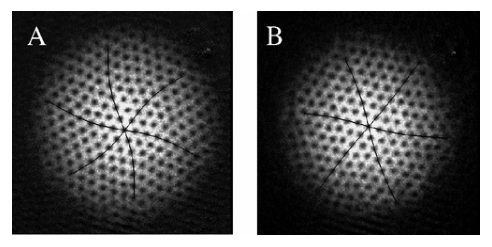
Summary. This review unifies the study of condensed matter physics by applying tools from high-energy field theory, specifically Effective Field Theories. It demonstrates that collective excitations in solids, fluids, and superfluids are often described by Goldstone bosons resulting from spontaneously broken symmetries. The work aims to bridge conceptual gaps between particle physics and material science using a systematic theoretical framework.
Why it may be interesting. It provides a powerful, unifying theoretical lens—the EFT framework—to analyze many-body dynamics in condensed matter systems, drawing direct parallels between particle physics symmetry breaking and macroscopic material properties like sound propagation.
Main problem. The paper reviews how high-energy field theory concepts, particularly Effective Field Theories (EFTs) and symmetry breaking, can be used to systematically describe the low-energy dynamics of various condensed matter systems.
Main result. It argues that many phenomena in solids, fluids, and superfluids are governed by gapless Goldstone excitations arising from spontaneously broken symmetries, unifying language across subfields.
Method. The primary method is theoretical review, employing EFT techniques to analyze collective excitations (like phonons) in different media while comparing results derived under relativistic versus nonrelativistic approximations.
Model / system. The scope covers general condensed matter systems, including solids, fluids, and superfluids. The analysis focuses on the medium's ground state properties defined by broken spacetime symmetries, such as Lorentz boosts.
Key observables. Goldstone boson spectra, phonon scattering rates, superfluid dynamics (e.g., Hall viscosity), and low-energy excitation modes.
Important parameters / regimes. Low energy/long distance limit ($\vec{k} o 0$), temperature, density, and the nature of broken symmetries (e.g., boost invariance).
Assumptions / limitations. The approach assumes that the low-energy physics can be captured by an EFT derived from underlying microscopic interactions; it often treats systems as being in a state where certain spacetime symmetries are spontaneously broken.
Paper structure. The paper is structured systematically by medium: Solids (Section 3), Fluids (Section 4), and Superfluids (Section 5), providing specialized derivations for each class of matter.
We review recent progress in understanding certain aspects of condensed matter systems from a high energy theory perspective. We discuss effective field theories that describe collective bulk and localized excitations in a variety of solid and fluid systems. Particular emphasis is placed on the role played by spacetime symmetries and their spontaneous breaking. The resulting Goldstone dynamics can be seen as underlying a wide variety of phenomena. We attempt to bridge the language gap between subfields while underscoring the numerous conceptual similarities.
Authors: Masato Todani, Satoshi Iihama, Yuto Moritake, Takeo Kato
Type: theory · Category: other · PDF: https://arxiv.org/pdf/2607.07488v1
Analysis basis: full PDF text, analyzed in chunks
Topic relevance: spintronics-quantum-optics interface 3/5 · non-equilibrium dynamics 2/5 · Keldysh / 2PI / non-Gaussian methods 1/5 · correlated / nonlocal dissipation 1/5 · driven-dissipative phase transition 1/5 · methods for driven-dissipative 1/5




Summary. The authors analyze antiferromagnetic resonance in an AFI/NM junction by treating the dynamics as a non-Hermitian eigenvalue problem. They demonstrate that maximizing absorption and achieving helicity selectivity requires tuning parameters near the stability threshold, which is distinct from the exceptional point. This establishes the stability boundary as the key control mechanism for developing polarization-selective sub-THz devices.
Why it may be interesting. This work applies concepts from non-Hermitian physics (EPs, stability boundaries) to classical magnetism, providing a framework for engineering highly controllable, polarization-selective THz devices using magnetic materials.
Main problem. The study investigates non-Hermitian control mechanisms governing helicity-selective antiferromagnetic resonance (AFMR) in magnetic junctions.
Main result. Strong resonant absorption enhancement and polarization selectivity are maximized by tuning the system parameters towards the stability threshold, rather than necessarily at the exceptional point. Reversing the spin-orbit torque can switch this helicity dependence.
Method. The dynamics are analyzed by linearizing the Landau-Lifshitz-Gilbert (LLG) equation into a 2x2 non-Hermitian eigenvalue problem to derive complex resonance frequencies and stability criteria.
Model / system. The system is an antiferromagnetic insulator/nonmagnetic metal junction, modeled using sublattice-dependent damping and spin-orbit torque acting on one sublattice. The dynamics are governed by the linearized LLG equation.
Key observables. Complex resonance frequencies ($\omega_{\pm}$), stability threshold ($\Gamma_{max}=0$), absorption power ($P(\omega)$), and degree of circular polarization ($C(\omega)$).
Important parameters / regimes. Spin-orbit torque strength ($c_J$), damping parameters, and the proximity to the stability threshold.
Assumptions / limitations. The analysis relies on approximations such as $\alpha_1, \alpha_2 \ll 1$ and $H_J \gg H_0, H_D, c_J$.
Figures summary. Figures illustrate the junction setup, stability diagrams showing the boundary ($\Gamma_{max}=0$) relative to the Exceptional Point (EP), and resonance spectra demonstrating enhancement near the threshold.
Paper structure. The paper proceeds by formulating the problem as a non-Hermitian eigenvalue problem, deriving conditions for EP and stability thresholds, analyzing absorption enhancement near these points, and finally confirming the results via full LLG dynamics to show gain/oscillation upon crossing the threshold.
We study non-Hermitian antiferromagnetic resonance in an antiferromagnetic insulator/nonmagnetic metal junction with sublattice-dependent damping and spin-orbit torque. By formulating the linearized Landau-Lifshitz-Gilbert (LLG) equation as a 2x2 non-Hermitian eigenvalue problem, we derive the complex resonance frequencies, the exceptional-point condition, and the stability-threshold condition. We show that the largest absorption response is maximized by approaching the stability threshold from the stable side. Near the threshold on the stable side, the absorption spectrum exhibits strong enhancement and linewidth narrowing, together with pronounced helicity dependence in the sub-THz regime that can be switched by reversing the spin-orbit torque. We also confirm by solving the full LLG dynamics that crossing the threshold leads to gain and self-oscillation. These results identify the stability threshold as the key control principle for enhancing absorption and achieving polarization selectivity in the sub-THz/THz regime.
Authors: Ilya Karavaev, Mingzhao Song, Andrey Bogdanov
Type: theory · Category: other · PDF: https://arxiv.org/pdf/2607.07228v1
Analysis basis: full PDF text, analyzed in chunks
Topic relevance: interference shaping light 3/5 · correlated / nonlocal dissipation 1/5 · correlated cavity matter 1/5 · driven-dissipative phase transition 1/5 · methods for driven-dissipative 1/5
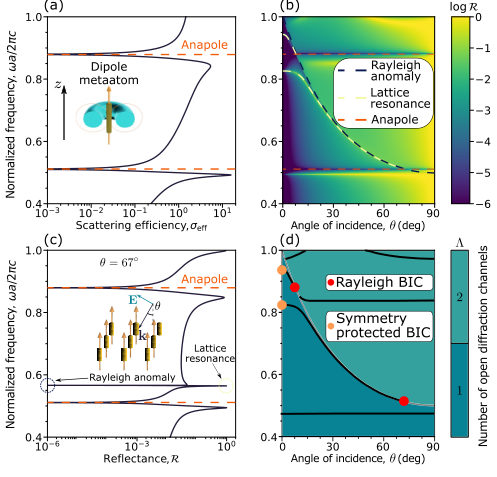
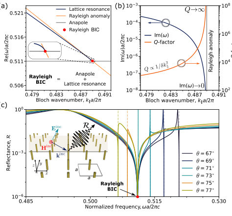
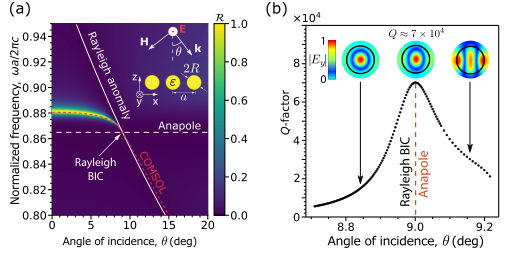
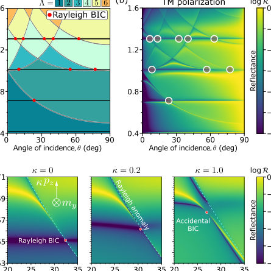
Summary. The paper introduces Rayleigh BICs, a new mechanism for creating nonradiating states in periodic metasurfaces operating beyond the subwavelength limit. These states arise from the coupling of lattice resonances with anapole frequencies exactly at diffraction anomalies. The key finding is that these BICs possess a unique cubic scaling of their quality factor, offering a robust design route for optical engineering.
Why it may be interesting. This work provides a powerful theoretical framework for engineering high-quality optical cavities in structured materials, which is highly relevant to quantum optics applications like low-loss waveguides or enhanced sensing platforms.
Main problem. The research aims to predict and engineer a novel class of Bound States in the Continuum (BICs) that remain nonradiating even when multiple diffraction channels are open, specifically operating beyond the subwavelength regime.
Main result. A distinct class of Rayleigh BICs is predicted to emerge at the intersection of collective lattice resonances and Rayleigh anomalies. These states exhibit a unique cubic scaling of the quality factor ($Q \propto 1/k^3$), confirming their robustness beyond conventional BIC mechanisms.
Method. The analysis employs multiple-scattering theory within the dipole approximation, focusing on the analytic structure of the reflection coefficient to identify conditions for nonradiating poles.
Model / system. The study models non-subwavelength periodic metasurfaces using a lattice of lossless point electric dipoles arranged on a square lattice. The physics involves coupling between lattice resonances, anapole states, and the opening of diffraction channels at Rayleigh anomalies.
Key observables. Reflectance ($R$), Quality factor ($Q$ factor), and the frequency/momentum dependence of the BIC location.
Important parameters / regimes. The periodicity ($a$) relative to the wavelength, the incidence angle ($ heta$), and the degree of coupling between lattice resonances and anapole frequencies.
Assumptions / limitations. The analysis relies on the dipole approximation initially, though extensions consider higher-order multipoles. The BIC condition requires simultaneous vanishing of both numerator and denominator of the reflection coefficient.
Figures summary. Figures illustrate single dipole scattering efficiency (showing Mie/anapole resonances), the reflectance spectrum showing transparency at anapole frequencies, and detailed plots pinpointing the Rayleigh BIC location where $Q$ diverges.
Paper structure. The paper builds by first defining BICs in metasurfaces, then identifying the specific mechanism—the interplay between lattice resonance crossing the anapole frequency precisely at a Rayleigh anomaly. It contrasts this with conventional BICs and quantifies its unique $Q$-factor scaling.
We predict a class of bound states in the continuum (BICs) in non-subwavelength periodic metasurfaces -- Rayleigh BICs -- that emerge precisely at Rayleigh anomalies, where diffraction channels open. In contrast to conventional symmetry-protected and accidental BICs, which are typically engineered in the subwavelength regime with only a few radiation channels, Rayleigh BICs remain nonradiating far beyond this limit, even when multiple diffraction channels are open. Their formation originates from the interplay between collective lattice resonances, Rayleigh anomalies, and anapole states of the constituent metaatoms. We show that Rayleigh BICs are characterized by an unusual cubic scaling of the quality factor in reciprocal space, ($Q \propto 1/k^3$), an asymptotic behavior that is not characteristic of either symmetry-protected or accidental BICs. Our results establish a constructive route for engineering nonradiating states in metasurfaces beyond the subwavelength regime.
Authors: V. D. Esin, D. Yu. Kazmin, A. V. Timonina, N. N. Kolesnikov, E. V. Deviatov
Type: experiment · Category: other · PDF: https://arxiv.org/pdf/2607.07334v1
Analysis basis: full PDF text, analyzed in chunks
Topic relevance: spintronics-quantum-optics interface 3/5 · exotic spin models in light-matter 1/5 · non-equilibrium dynamics 1/5
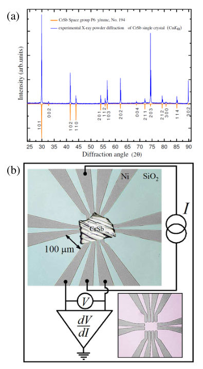
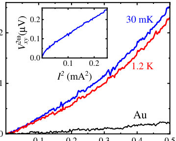

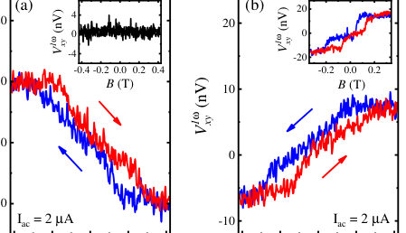
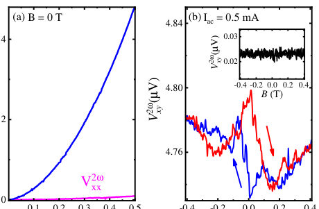
Summary. This work experimentally investigates spin-polarized electron transport in the altermagnet CrSb by measuring anomalous and non-linear Hall effects. By comparing results from ferromagnetic versus non-magnetic contacts, the authors confirm that these unique signatures require spin polarization. The findings strongly suggest that the interplay between bulk magnetism and topological surface states dictates the material's electronic response.
Why it may be interesting. While focused on condensed matter magnetism/topology, the study's reliance on measuring quantized responses (like harmonic generation) under controlled spin injection provides a highly sensitive probe into electronic band structure symmetries relevant to advanced quantum materials research.
Main problem. To experimentally investigate spin-polarized electron transport, specifically observing anomalous and non-linear Hall effects, in the centrosymmetric altermagnet CrSb.
Main result. Pronounced AHE and NLHE were observed using ferromagnetic Ni contacts, which are absent with non-magnetic Au contacts. The results suggest these effects arise from the joint influence of bulk spin splitting and topological surface states.
Method. Transport measurements were performed on single-crystal CrSb flakes at very low temperatures (30 mK) by measuring transverse Hall voltages using both first ($ ext{V}{1\omega}^{xy}$) and second ($ ext{V}$) harmonic lock-in techniques.}^{xy
Model / system. The physical system is the altermagnet CrSb, which is studied as a single crystal flake. The experiment compares measurements using ferromagnetic Ni contacts (inducing spin polarization) against non-magnetic Au reference contacts.
Key observables. Anomalous Hall Effect (AHE) hysteresis loops, sign inversion of AHE slope, and Non-linear Hall Effect ($ ext{V}_{2\omega}^{xy}$) with magnetic field dependence.
Important parameters / regimes. Low temperature ($T = 30 ext{ mK}$), applied magnetic field ($ ext{B}$), and the nature of the contacts (ferromagnetic vs. non-magnetic).
Assumptions / limitations. The observed effects are attributed to spin-polarized current injection from the ferromagnetic Ni contacts, and the geometry is designed to exclude thermoelectric contributions.
Figures summary. Figures show AHE hysteresis loops ($ ext{V}{1\omega}^{xy}( ext{B})$) comparing CrSb with Ni leads versus reference samples with Au leads. Another figure compares NLHE signals ($ ext{V} \sim I^2$) for both contact types.}^{xy
Paper structure. The paper proceeds by presenting the experimental setup and measurements, demonstrating the distinct signatures (AHE/NLHE) when using spin-polarized contacts versus non-magnetic controls. The interpretation then links these unique transport features to the theoretical concepts of altermagnetism and topological surface states.
We experimentally investigate spin-polarized electron transport for the centrosymmetric altermagnet CrSb, which is known to reveal both altermagnetic and topological features. We demonstrate pronounced first-harmonic anomalous and second-harmonic non-linear Hall effects for a single-crystal CrSb flake with ferromagnetic nickel contacts, while both effects can not be seen for the reference samples with non-magnetic gold ones. For the anomalous Hall effect, we demonstrate bow-tie hysteresis loop in Hall voltage, which is usually ascribed to surface spin textures in magnetic materials. The slope of the Hall curve changes a sign for two orientations of the Hall-bar contact configuration for the same sample, i.e. for the same sign of the charge carriers. We interpret the observed sign inversion and bow-tie hysteresis as the joint effect of the alternating bulk spin splitting and spin-polarized topological surface states in CrSb. The pronounced non-linear Hall effect with hysteresis in magnetic field confirms finite Berry curvature dipole under injection of spin-polarized electrons, i.e. the topological features for the altermagnetic candidate CrSb.
Authors: Franz Vilsmeier, Florian Bruckner, Claas Abert, Dieter Suess, Andrii V. Chumak
Type: theory · Category: disordered systems and neural networks · PDF: https://arxiv.org/pdf/2607.07324v1
Analysis basis: full PDF text, analyzed in chunks
Topic relevance: driven-dissipative phase transition 2/5 · methods for driven-dissipative 2/5 · Keldysh / 2PI / non-Gaussian methods 1/5 · analog quantum simulation 1/5 · exotic spin models in light-matter 1/5 · non-equilibrium dynamics 1/5 · non-equilibrium universality 1/5 · spintronics-quantum-optics interface 1/5
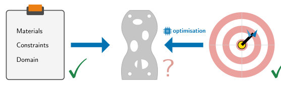
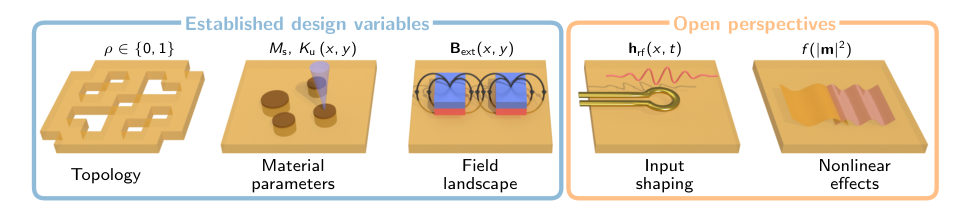
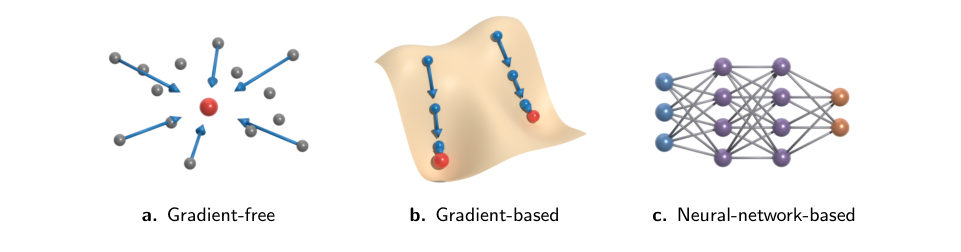
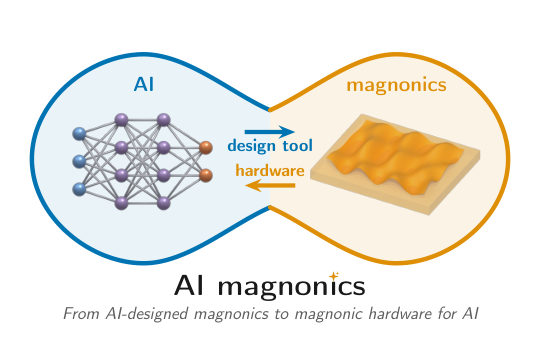
Summary. This paper surveys the rapidly growing field of inverse design for magnonic devices, treating it as a powerful paradigm shift from traditional engineering. It organizes the research by design variables and computational algorithms, proposing 'AI magnonics' to describe the synergy between machine learning tools and magnetic hardware for advanced applications like neuromorphic computing.
Why it may be interesting. While focused on classical magnetism, the methodology heavily relies on integrating advanced computational optimization (gradient-based methods) with physical systems, mirroring techniques used in designing quantum circuits or simulating complex many-body Hamiltonians where parameter space exploration is key.
Main problem. The primary goal is to develop a systematic, computational framework for designing magnonic devices by specifying desired functionalities and allowing an algorithm to determine the optimal physical structure.
Main result. The authors propose 'AI magnonics' as the emerging paradigm describing the convergence of machine learning tools for device design and magnonic devices used for neuromorphic computation.
Method. The review surveys inverse design techniques, categorizing them by design variables (topology, material parameters, field landscape) and algorithmic toolboxes (gradient-free, gradient-based, NN-based methods).
Model / system. The system under study is magnonics, which involves spin waves propagating in magnetic thin films. The physics is governed by the nonlinear Landau–Lifshitz–Gilbert (LLG) equation.
Key observables. Spin-wave response, filter characteristics, logic gate operation, and pattern recognition capability.
Important parameters / regimes. Design variables include topology ($ ho$), material parameters ($M_s, K_u, \alpha$), and the external magnetic field landscape ($B_{ext}(x, y)$).
Assumptions / limitations. The work assumes that inverse design can overcome the limitations of intuition-guided, direct device engineering.
Figures summary. Figure 1 contrasts direct vs. inverse design workflows; Figure 2 schematically maps out the five key design variables (Topology, Material parameters, Field landscape, Input shaping, Nonlinear effects); Table 2 organizes literature by optimization class and variable type.
Paper structure. The paper is structured as a comprehensive survey, first defining the problem via direct vs. inverse design, then systematically organizing the field along two axes: design variables and algorithmic toolboxes, before concluding with open frontiers and proposing the 'AI magnonics' concept.
Inverse design - specifying a desired functionality and letting a computational algorithm find the optimal structure - has emerged as a powerful paradigm for magnonic device engineering. In this article, we survey the rapidly growing field of inverse-design magnonics, organising it along two axes: the design variables (topology, material parameters, and magnetic field landscape) and the algorithmic toolbox (gradient-free, gradient-based, and neural-network-based methods) together with the differentiable micromagnetic solvers that enable them. We then identify open frontiers that we consider most promising for the next phase of the field: sensitivity analysis and robust design to bridge the gap between simulation and experiment; input shaping and transducer optimisation; the incorporation of nonlinear spin-wave effects as an explicit design resource; spatially structured amplification; self-adapting media and machine-learning-based design; and the long-term vision of a universal, reconfigurable magnonic platform. We argue that magnonics and artificial intelligence are converging from two directions - machine-learning tools for designing magnonic devices, and magnonic devices as hardware for neuromorphic computation - and propose the term AI magnonics to describe this emerging paradigm.
Authors: Xiao-Qi Cui, Xin-Wei Jin, Shiyi Wang, Xiao-Yong Wen, Zhan-Ying Yang
Type: theory · Category: other · PDF: https://arxiv.org/pdf/2607.07345v1
Analysis basis: full PDF text, analyzed in chunks
Topic relevance: driven-dissipative phase transition 2/5 · non-equilibrium universality 2/5 · Frenkel-Kontorova 1/5 · analog quantum simulation 1/5 · exotic spin models in light-matter 1/5 · non-equilibrium dynamics 1/5 · spintronics-quantum-optics interface 1/5
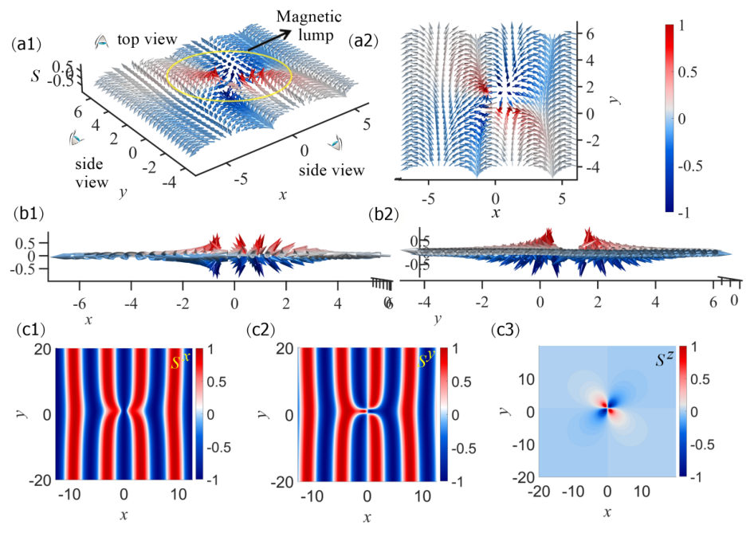
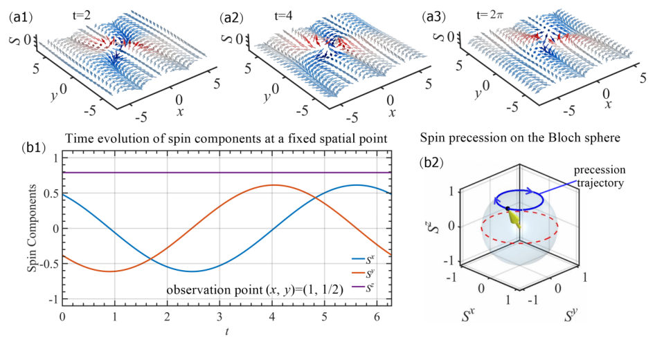
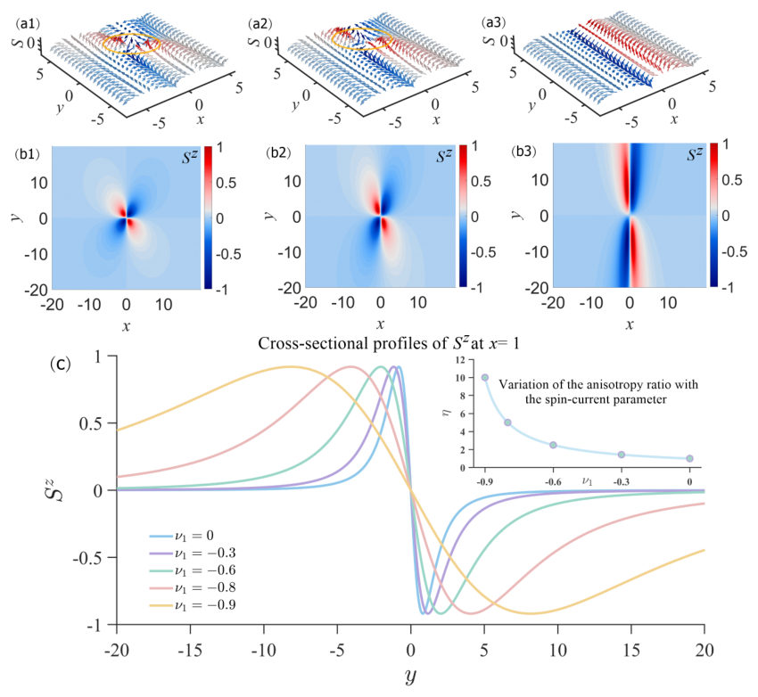
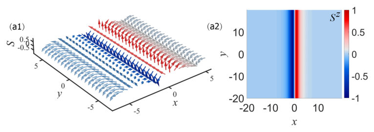
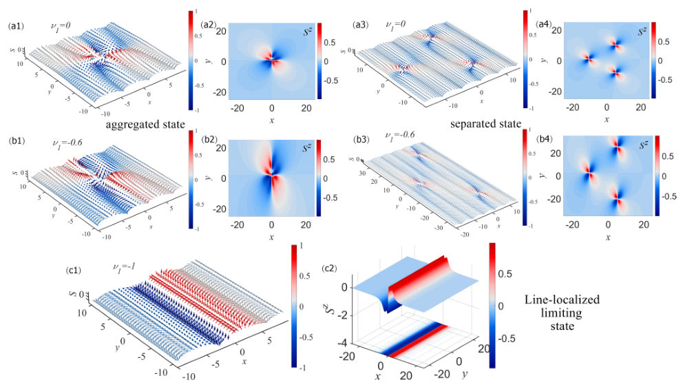
Summary. This paper analytically investigates how an effective spin-current term dictates the geometry and stability of magnetic lump solitons in a nonlinear spin system. By employing integrable methods, the authors demonstrate that the spin current acts as a universal control parameter, inducing anisotropic deformation that can drive the localized structure from two dimensions toward one dimension. This provides a powerful theoretical example of geometric control over complex quantum-like excitations.
Why it may be interesting. While focused on classical nonlinear PDEs, the concept of geometric control parameters governing structural transitions (like dimension crossover) is highly relevant to understanding topological defects or emergent order parameters in quantum field theories or condensed matter models.
Main problem. The study investigates how an effective spin-current term controls the anisotropic deformation and structural transitions of two-dimensional magnetic lump solitons in nonlinear spin systems.
Main result. Spin current induces a universal, anisotropic deformation mechanism that drives localized excitations toward quasi-one-dimensional soliton-like states across different hierarchical structures.
Method. The authors construct exact solutions using the Darboux transformation applied to an integrable (2+1)-dimensional nonlinear spin system, analyzing the dependence on the spin-current parameter.
Model / system. The model is a (2+1)-dimensional nonlinear spin system containing an effective spin-current transport term. It describes localized magnetic lump solitons whose dynamics are governed by an integrable structure.
Key observables. Anisotropic deformation ratio ($\eta$), localization widths ($W_x, W_y$), and the transition to quasi-one-dimensional states.
Important parameters / regimes. The effective spin-current coefficient ($ u_1$) acts as a geometric control parameter; specific regimes include $ u_1=0$ (reference) and the singular limit $ u_1 o -1$.
Assumptions / limitations. The analysis relies on the integrable structure of the nonlinear spin system, allowing for exact solutions via generalized Darboux transformations.
Figures summary. Figures illustrate the doubly localized structure at zero current ($ u_1=0$) with internal precession, and show how varying $ u_1$ causes anisotropic expansion along $y$, leading to a breakdown of 2D confinement as $ u_1 o -1$.
Paper structure. The paper establishes the model using an integrable framework, constructs exact solutions via Darboux transformations, analyzes the role of the spin-current parameter ($ u_1$) in controlling spatial anisotropy and dimensional crossover, and finally generalizes this mechanism to higher-order lump structures.
We investigate a (2+1)-dimensional nonlinear spin system containing an effective spin-current transport term. Based on its integrable structure, exact magnetic lump solutions are constructed on a rotating spin background, including both fundamental and higher-order configurations generated via the Darboux transformation. The obtained excitations are doubly localized in spatial directions, while their temporal evolution is characterized by intrinsic spin precession rather than translational motion of the localized envelope. It is shown that the effective spin-current contribution enters the localization coordinate and acts as a geometric control parameter for the spatial structure of the solutions. In particular, spin current induces anisotropic deformation of the localized profile, leading to a continuous transition toward a quasi-one-dimensional soliton-like state under specific parameter regimes. More importantly, this deformation mechanism is found to be universal across different hierarchical lump structures, including both fundamental and higher-order solutions, indicating that spin current governs a unified structural modulation law for the entire family of localized spin excitations. These results provide an analytically tractable example of spin-current-controlled anisotropic deformation and dimensional crossover in nonlinear spin systems, and further reveal a universal mechanism for geometric control of localized spin textures beyond individual solution types.
Authors: Yan-Long Chen, Kin Hung Fung, C. T. Chan, Qinghua Guo
Type: both · Category: other · PDF: https://arxiv.org/pdf/2607.07224v1
Analysis basis: full PDF text, analyzed in chunks
Topic relevance: analog quantum simulation 2/5 · Keldysh / 2PI / non-Gaussian methods 1/5 · driven-dissipative phase transition 1/5 · methods for driven-dissipative 1/5
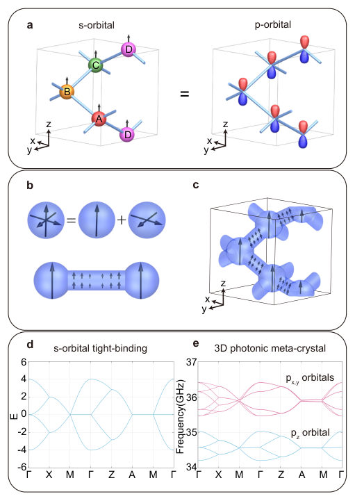
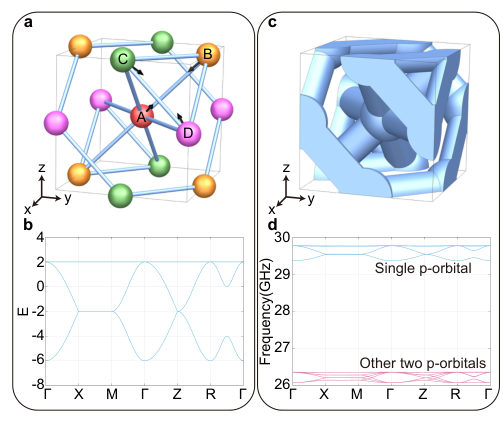
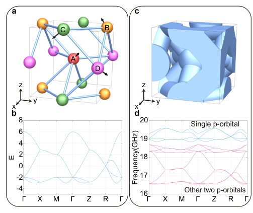
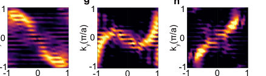
Summary. The paper presents a method to achieve scalar-like band structure engineering in inherently vectorial 3D photonic crystals by utilizing site-adapted p-orbitals. By leveraging group theory and symmetry constraints, the authors show that the complex electromagnetic dynamics can be effectively modeled by a simple scalar Hamiltonian while preserving polarization control as an active design knob. This offers a robust pathway for designing novel photonic materials based purely on crystal symmetry.
Why it may be interesting. This work provides a powerful symmetry-based tool to engineer photonic band structures. For AMO/Quantum Optics, it shows how complex vectorial degrees of freedom can be effectively mapped onto simpler scalar models using local symmetries, which is analogous to engineering effective Hamiltonians in open quantum systems.
Main problem. The core challenge is realizing scalar-wave dispersion descriptions for electromagnetic waves, which are inherently vectorial, within three-dimensional photonic crystals.
Main result. Site-adapted p-orbitals can induce an effective scalar band structure that remains isomorphic to the true elementary band representation up to a twist, allowing polarization control via symmetry.
Method. The authors employ tight-binding theory combined with group theory (Mackey's theorem) to project the full vectorial Hamiltonian onto a selected one-dimensional, site-adapted orbital sector.
Model / system. The system involves 3D photonic meta-crystals analyzed using a tight-binding model derived from local p-orbitals. The method is tested in specific space groups like P41212 and Pn3m.
Key observables. Band structure dispersion relations, iso-frequency contours, and measured surface-projected momentum spectra (e.g., at 19.09 - 19.23 GHz).
Important parameters / regimes. The local p-orbital axes adapt site-by-site according to the crystal symmetry; the analysis focuses on isolating a one-dimensional irreducible representation.
Assumptions / limitations. The method assumes that the local p-orbital representation is restricted from a one-dimensional representation of the point group, allowing for an effective scalar Hamiltonian description.
Figures summary. Figures illustrate orbital-selective scalarization in P41212 and cubic scalarization in Pn3m, showing isolated scalar-like manifolds (cyan bands) separated from complementary sectors. Figure 4 compares simulated and measured spectra confirming the manifold signature.
Paper structure. The paper establishes the theoretical necessity of overcoming the vectorial nature of light fields; it develops the site-adapted p-orbital tight-binding model using group theory; key results demonstrate scalarization in specific crystal symmetries (P41212, Pn3m); and finally, these concepts are validated through full-wave spectrum calculations and microwave measurements.
Electromagnetic waves are intrinsically vectorial and require description via polarization, unlike scalar fields such as acoustic pressure or electronic wavefunctions. In three dimensions, the transversality constraint further prevents any globally smooth transverse-polarization frame at the $Γ$ point, which would apparently rule out a simple scalar band structure for three-dimensional (3D) photonic crystals. We show here that site-adapted $p$-orbitals can realize scalar-wave dispersion: the induced band representation is isomorphic to the scalar elementary band representation up to a one-dimensional character twist, so the symmetry-enforced degeneracies and compatibility relations are the same. We demonstrate this mechanism experimentally in 3D photonic meta-crystals, where the local $p$-orbital axes adapt from site to site according to symmetry. In contrast to a fixed-polarization reduction (e.g., in 2D), our construction preserves site-polarization textures while simultaneously supporting a scalar network with one amplitude per site. Thus, it offers a pathway from vectorial photonic degrees of freedom to scalar band engineering, keeping polarization as an active design knob.
Authors: Edward J Dunn, Robert J Young, Samuel P Jarvis
Type: theory · Category: other · PDF: https://arxiv.org/pdf/2607.07363v1
Analysis basis: full PDF text, analyzed in chunks
Topic relevance: methods for driven-dissipative 1/5 · non-equilibrium dynamics 1/5
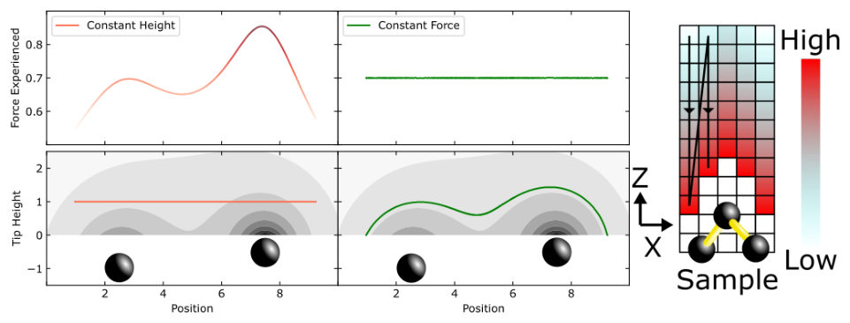
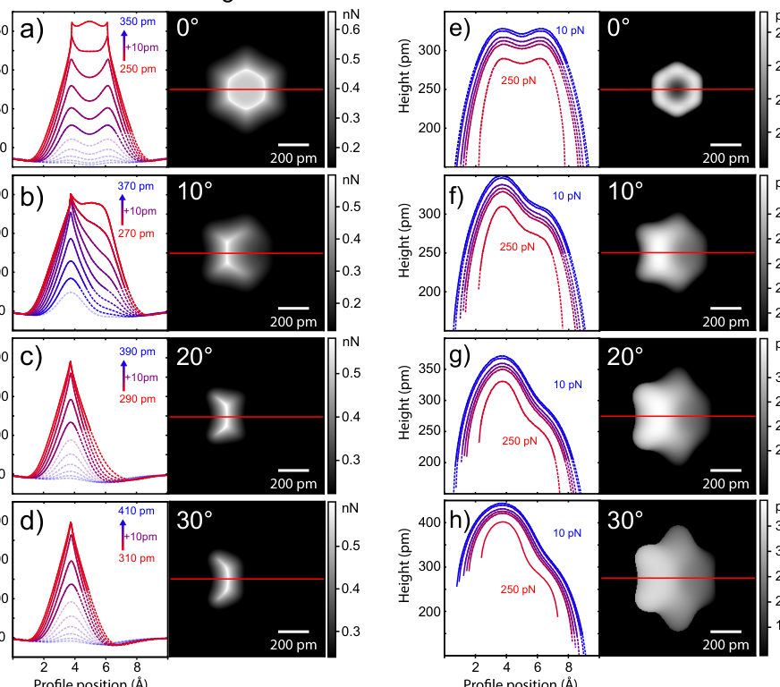
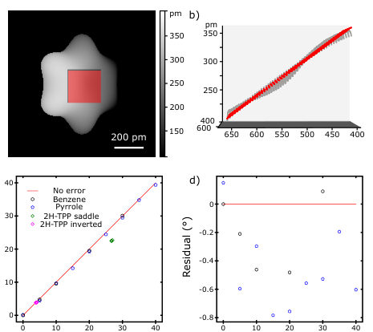
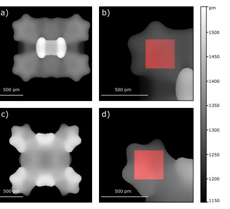
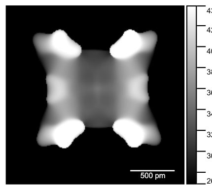
Summary. This work uses computational simulations to test how well different AFM imaging techniques can map the structure of molecules adsorbed on surfaces. By comparing constant-height scans to force isosurface scans, the authors demonstrate that recording a constant force threshold allows researchers to resolve deep, submolecular details and molecular orientation in complex, non-planar systems where simple height measurements fail.
Why it may be interesting. While the subject is surface science/nanomaterials, the methodology involves simulating physical interactions (force fields) and extracting contrast from a complex potential energy landscape, which shares conceptual overlap with modeling quantum potentials or interaction Hamiltonians in condensed matter theory.
Main problem. The primary challenge is extending high-resolution Atomic Force Microscopy (AFM) imaging from planar to non-planar molecular systems, where structural information can be distributed across varying heights above the surface.
Main result. Constant-force force isosurface images successfully retain submolecular and three-dimensional structural information for complex molecules, which is often lost when using conventional constant-height measurements.
Method. The study uses probe-particle-model simulations to predict and extract characteristic force isosurfaces from simulated 3D force fields above adsorbed molecules.
Model / system. The research models molecular adsorption on surfaces, simulating interactions between a tip particle (e.g., CO-like) and various organic molecules like benzene, pyrrole, porphyrins (TPP), and C60.
Key observables. Force isosurface contrast, constant-height images vs. constant-force images, quantitative recovery of molecular orientation/tilt angles.
Important parameters / regimes. Adsorption angle ($ ext{e.g.} 0^\circ ext{ to } 30^\circ$), selected force threshold for isosurface extraction.
Assumptions / limitations. Electrostatic interactions were omitted in the primary comparison; constant-force images are not direct topographic maps but reflect the full tip-sample interaction field.
Figures summary. Figures compare simulated constant-height and constant-force images for tilted benzene, show force isosurfaces distinguishing adsorption geometries (e.g., 2H-TPP), and illustrate submolecular contrast in cores obscured at higher heights ($ ext{CO-FePc}$).
Paper structure. The paper progresses by first establishing the limitation of constant-height imaging on non-planar molecules, then demonstrating that constant-force isosurfaces retain structural detail for simple tilted systems (benzene), and finally applying this technique to complex, curved, or multi-component systems ($ ext{2H-TPP}$, $ ext{C}_{60}$) to prove its general utility.
High-resolution atomic force microscopy has transformed molecular imaging by revealing intramolecular structure directly in real space. A major remaining challenge is to extend this capability from largely planar molecules to non-planar molecular systems, where the most important structural information may be distributed across different heights above the surface. Here we use probe-particle-model simulations to predict the constant-force contours expected above molecules with increasing structural complexity. By extracting force isosurfaces from simulated three-dimensional force fields, we compare the molecular information retained in constant-height and constant-force images. For tilted benzene and pyrrole, constant-force images preserve the molecular framework across a range of adsorption angles and allow the molecular orientation to be recovered quantitatively. For larger non-planar and three-dimensional systems, simulations identify characteristic force-isosurface contrast associated with adsorption geometry, lower-lying molecular structure and curved molecular surfaces. These results provide target contrasts for force isosurfaces that could be extracted from three-dimensional force-mapping experiments, evaluating the molecular information retained by ideal force-isosurface imaging across progressively non-planar systems.
Authors: Ryan Paxson, Stephanie J. Hong, Bicky Moirangthem, Parham Kabirifar, Saya Takeuchi, Tianyu Li, Chih-Yu Lee, Haotong Liang, Keenan Avers, Kamal Joshi, Amlan Datta, Makariy Tanatar, Shanta Saha, Peter Zavalij, Ruslan Prozorov, Alexander J. Grutter, Efrain E. Rodriguez, Ichiro Takeuchi
Type: experiment · Category: other · PDF: https://arxiv.org/pdf/2607.06819v1
Analysis basis: full PDF text, analyzed in chunks
Topic relevance: analog quantum simulation 1/5 · driven-dissipative phase transition 1/5
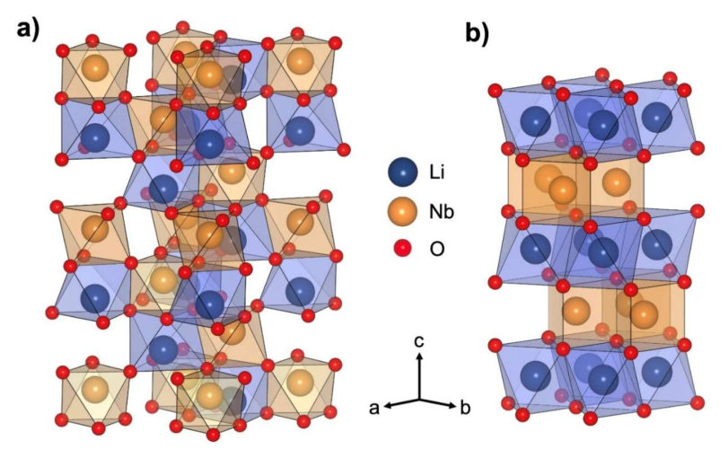
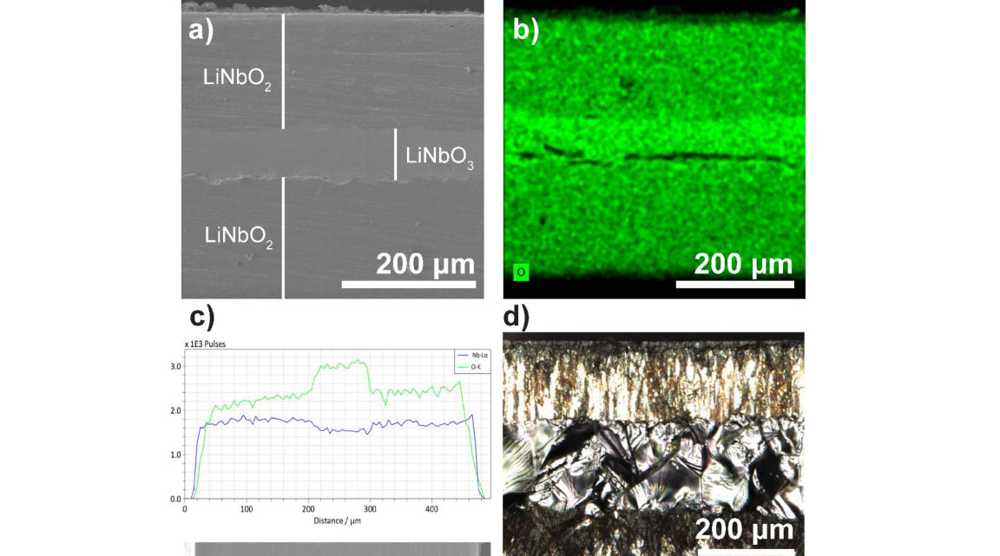
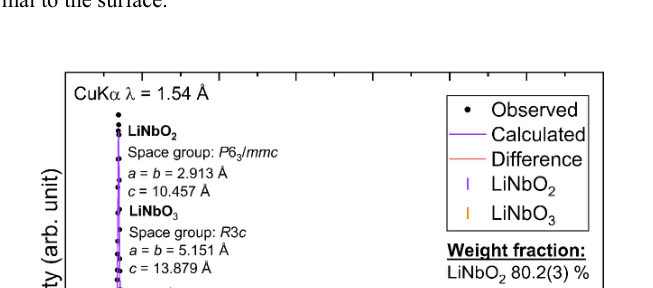
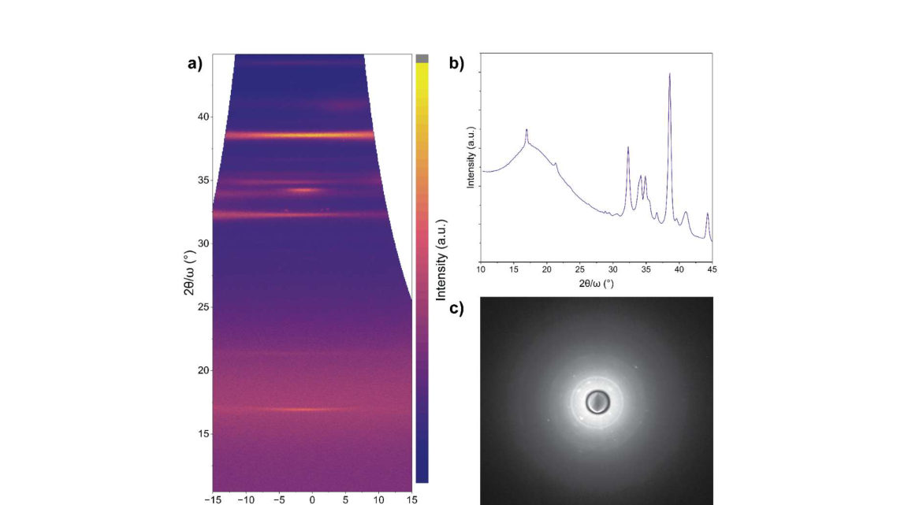
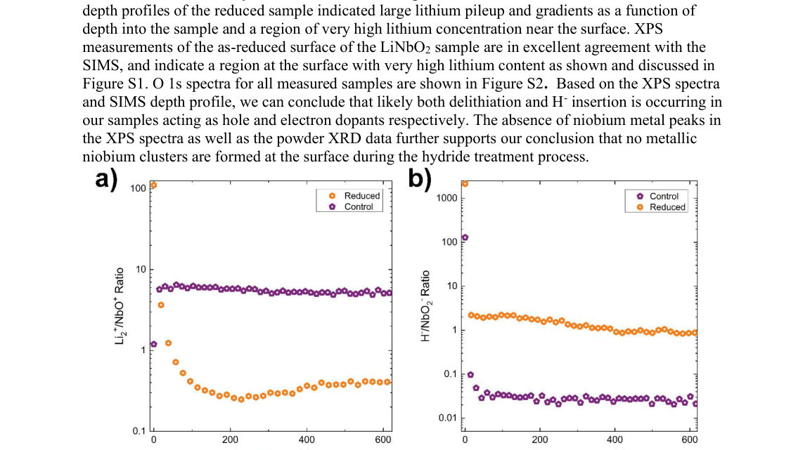
Summary. This work reports synthesizing bulk superconducting LiNbO2 crystals from LiNbO3 single crystals using CaH2 reduction. The process induces a structural phase change accompanied by metallic behavior and superconductivity up to 14.4 K. Comprehensive characterization confirms the bulk nature of this high-temperature superconductor.
Why it may be interesting. While focused on oxides, the study's use of controlled chemical reduction to induce novel electronic states (superconductivity) in a crystalline solid is relevant to understanding emergent quantum phases driven by stoichiometry control, which has parallels in correlated electron systems.
Main problem. The study aims to synthesize bulk superconducting LiNbO2 crystals by inducing a phase transformation from parent LiNbO3 single crystals using CaH2 reduction.
Main result. The reduction successfully yields superconducting LiNbO2 with an onset critical temperature up to 14.4 K and confirms robust, bulk superconductivity via the Meissner effect measurements.
Method. Synthesis involves controlled hydride reduction of single crystals, followed by extensive characterization using techniques like XPS, SIMS, AC susceptibility, and magnetization measurements.
Model / system. The physical system is the solid-state phase transformation from layered LiNbO3 to superconducting LiNbO2. The process involves valence state changes (Nb 5+ to Nb 3+) and stoichiometry modification via de-lithiation and hydrogenation.
Key observables. Superconducting transition temperature ($T_c$ onset $\approx 14.4 ext{ K}$), superconducting volume fraction ($\approx 77\%$), upper critical field ($H_{c2} \approx 26 ext{ T}$), and oxidation states derived from XPS ($ ext{Nb}^{3+}$).
Important parameters / regimes. Reduction temperature range ($350^\circ ext{C}$ to $700^\circ ext{C}$) and reaction time (up to 720 hours); the stoichiometry of the resulting phase.
Assumptions / limitations. The reduction process is modeled as a reconstructive, non-topotactic phase transformation driven by extreme hydride chemistry.
Figures summary. Figures show cross-sectional SEM/EDS mapping confirming bulk conversion; XRD confirms $ ext{LiNbO}_2$ presence; and magnetic measurements confirm the Meissner effect and high $H_{c2}$.
Paper structure. The paper details the synthesis procedure, followed by comprehensive characterization using multiple techniques (SIMS, XPS, Magnetometry) to prove phase transformation, doping mechanisms, and superconducting properties.
We have synthesized layered superconducting LiNbO$_2$ crystals through a bulk phase transformation from LiNbO$_3$ single crystals via CaH$_2$ reduction. As the Nb valence is reduced from 5+ to 3+, the material undergoes a structural transformation to the resulting product, LiNbO$_2$, which is accompanied by metallic behavior and a superconducting transition, Tc onset, as high as 14.4 K. Secondary ion mass spectroscopy (SIMS) and X-ray photoelectron spectroscopy (XPS) show that the resulting phase is hole-doped through de-lithiation during the reduction. Magnetization and AC susceptibility measurements from a tunnel diode resonator confirm the bulk nature of superconductivity with a superconducting volume fraction of approximately 77% and an upper critical field approaching 26 T. Our study demonstrates extreme hydride reduction as an effective method to induce phase transformations with non-topotactic pathways and can be used to synthesize bulk materials with exotic properties.
Authors: Ghulam Mohmad, Vishal Tripathi, Goutam Sheet
Type: theory · Category: other · PDF: https://arxiv.org/pdf/2607.07210v1
Analysis basis: full PDF text, analyzed in chunks
Topic relevance: Keldysh / 2PI / non-Gaussian methods 1/5
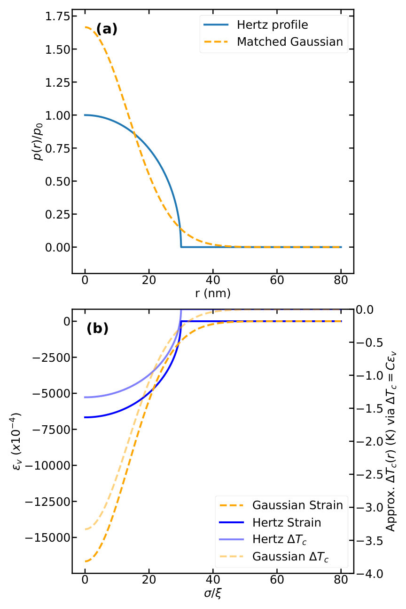
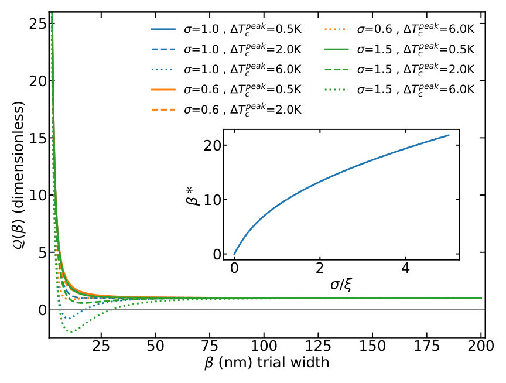
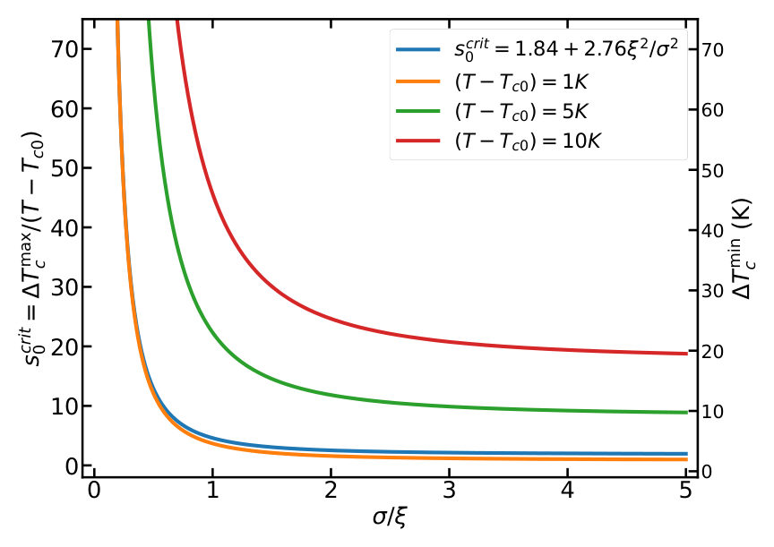
Summary. This paper develops a unified theory explaining how localized stress fields from point contacts can induce or enhance superconductivity. By merging Hertzian contact mechanics with Ginzburg-Landau analysis, the authors derive a quantitative nucleation criterion dependent on an experimentally measurable uniaxial coupling scale ($C^{\mathrm{exp}}$). This framework successfully predicts superconducting behavior in various materials, including elemental Sb and Y.
Why it may be interesting. The work provides a highly structured, predictive theoretical framework linking macroscopic mechanical measurements (contact pressure) directly to microscopic quantum phenomena (superconductivity), which is valuable for understanding strain-mediated quantum effects in condensed matter systems.
Main problem. The lack of a unified theoretical description for superconductivity nucleation or enhancement induced by localized, inhomogeneous strain fields generated under metallic point contacts.
Main result. A quantitative criterion derived from combining Hertzian contact mechanics and Ginzburg-Landau theory establishes the necessary conditions for tip-induced superconductivity (TISC/TESC). The framework successfully predicts critical temperatures for elemental Sb and Y.
Method. The authors combine continuum mechanics (Hertzian theory) to model strain fields with a variational analysis of the Ginzburg-Landau free energy functional to determine the superconducting order parameter's stability.
Model / system. The system involves a metallic tip creating a spatially inhomogeneous, predominantly uniaxial stress field ($\sigma_{zz}$) on a superconductor. The theoretical framework models superconductivity nucleation by solving for bound states in an effective potential well derived from the strain coupling to the electronic structure.
Key observables. Critical temperature enhancement ($\Delta T_c$), the experimentally measurable uniaxial coupling scale ($C^{\mathrm{exp}}$), and the superconducting order parameter $\psi(r)$.
Important parameters / regimes. The uniaxial coupling scale $C^{\mathrm{exp}}$, the contact radius ($a$), maximum pressure ($p_{max}$), and the dimensionless local enhancement strength ($s_0$).
Assumptions / limitations. The stress field is predominantly uniaxial, allowing for a simplified strain-coupling model. The analysis relies on approximating the complex physics using Ginzburg-Landau theory coupled with Hertzian contact mechanics.
Figures summary. Figure 1 compares theoretical and measured profiles of pressure/strain; Figure 2 uses the Rayleigh-Ritz functional to define the nucleation threshold ($Q=0$); Figure 3 plots calculated nucleation criteria across different material regimes.
Paper structure. The paper first establishes the physical necessity of uniaxial strain for TISC/TESC. It then develops a quantitative criterion using GL theory and contact mechanics, classifying materials based on how $C^{\mathrm{exp}}$ relates to theoretical coupling scales ($C_{th}$ vs $C_{vol}$). Finally, it applies this framework to predict specific material outcomes.
A metallic point contact formed on a non-superconducting or weakly superconducting material often nucleates or enhances superconductivity confined under the contact. However, no unified theoretical description of the phenomenon exists. We show that the spatially inhomogeneous, predominantly uniaxial nature of the stress field under a point contact is fundamental for such tip-induced and tip-enhanced superconductivity (TISC/TESC). We also show that the coupling of such a stress field to the electronic structure can be estimated through an experimentally measurable uniaxial coupling scale $C^{\mathrm{exp}}$. Combining Hertzian contact mechanics with a Ginzburg-Landau variational analysis, we derive a criterion for the nucleation of TISC/TESC and determine $C^{\mathrm{exp}}$ for twenty-one materials. For topological semimetals with ungapped band crossings, the framework explains observed critical temperatures with no free parameters and for all others, $C^{\mathrm{exp}}$ provides a direct experimental determination of the uniaxial strain sensitivity and a target scale for microscopic theories.The work predicts TISC in elemental Sb and Y with $T_c \approx 2.8$\,K and $T_c \approx 12$\,K respectively.
Authors: Ying-Jie Zhang, Heng Xu, Zhe-Ning Xiang, Zong-Hui Wu, Qing Li, Hai-Hu Wen
Type: experiment · Category: other · PDF: https://arxiv.org/pdf/2607.07569v1
Analysis basis: full PDF text, analyzed in chunks
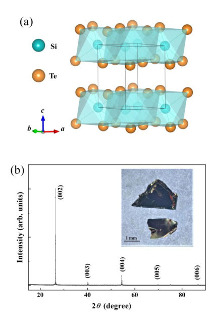
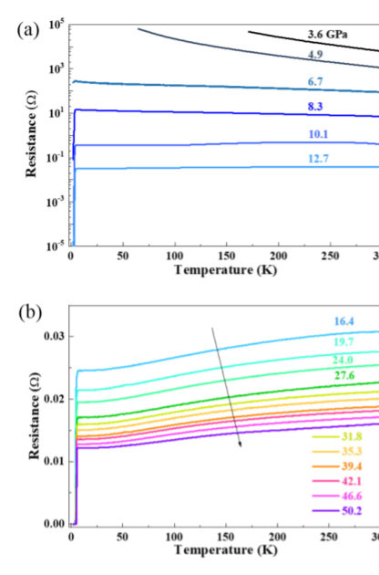
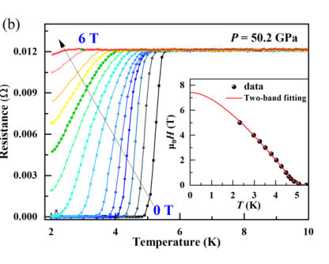
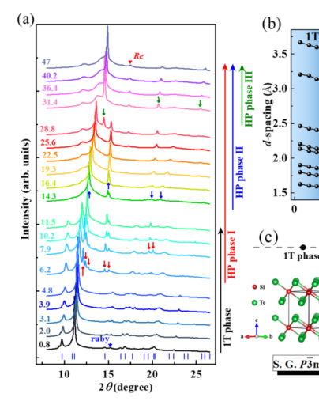
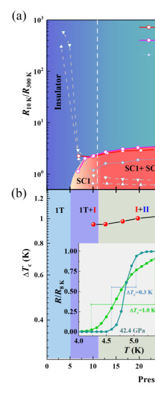
Summary. This work reports on the discovery of superconductivity in 1T-SiTe2, a layered metalloid dichalcogenide. By applying high pressure, the material undergoes structural phase transitions that drive it from an ambient semiconducting state into a superconducting metallic phase. The findings establish a new platform for studying superconductivity outside traditional transition-metal systems.
Why it may be interesting. While primarily experimental, the strong correlation between external tuning parameters (pressure) causing structural changes and emergent quantum phenomena (superconductivity) provides a model for understanding pressure-induced electronic state control relevant to condensed matter theory.
Main problem. The study investigates how applying high pressure affects the structural phase transitions, metallization, and emergence of superconductivity in the layered metalloid dichalcogenide 1T-SiTe2.
Main result. Superconductivity emerges under pressure, with the critical temperature (Tc) increasing continuously up to a saturation value of approximately 5.5 K above 30 GPa. The superconducting behavior is strongly correlated with multiple structural phase transitions observed during compression.
Method. The research employed high-pressure measurements using a Diamond Anvil Cell (DAC), combining electrical transport measurements (resistivity vs. temperature/field) with in-situ synchrotron X-ray Diffraction (XRD).
Model / system. The physical system is the layered metalloid dichalcogenide 1T-SiTe2, which was characterized at ambient pressure and subjected to pressures up to 50 GPa. The study tracks structural changes through multiple identified phases (e.g., Phase I, II, III).
Key observables. Electrical resistivity ($ ho$), superconducting transition temperature ($T_c$), magnetic susceptibility ($\chi$-$T$), and crystal structure parameters derived from high-pressure XRD.
Important parameters / regimes. Pressure range up to 50 GPa; $T_c$ saturation at $\sim 5.5 ext{ K}$; ambient semiconducting behavior transitioning to metallic/superconducting states under pressure.
Assumptions / limitations. The changes in transport properties are assumed to be structurally driven by the observed phase transitions, and the superconducting mechanism is suggested to potentially involve phonon mediation based on $H_{c2}$ analysis.
Figures summary. Figures detail ambient characterization (XRD, $ ho$-$T$), high-pressure resistance curves showing superconductivity onset, in-situ XRD confirming three structural phases under pressure, and phase diagrams mapping $T_c$ vs. Pressure.
Paper structure. The paper follows a standard materials physics structure: initial ambient characterization of the semiconducting state; application of high pressure to induce metallization and observe superconductivity; detailed analysis linking specific structural transitions (via XRD) to anomalous transport responses ($ ho$-$T$ curves).
Layered transition-metal dichalcogenides (TMDs) have attracted considerable attention as promising platforms for exploring emergent physics and potential device applications. In contrast, metalloid-based dichalcogenide counterparts remain largely underexplored. Here, we report the pressure-induced structural phase transition, metallization, and superconductivity in the layered metalloid dichalcogenide 1T-SiTe$_2$. At ambient pressure, 1T-SiTe$_2$ crystallizes in a trigonal crystal structure (space group: $P\bar{3}m1$) and exhibits intrinsic semiconducting transport characteristics. Upon pressurization, in concomitant with the suppression of semiconducting behavior in resistance, superconductivity emerges at around 6.7 GPa. The superconducting transition temperature (T$_c$) rises continuously with increasing pressure and finally saturates at approximately 5.5 K for pressures above 30 GPa. During the compression, 1T-SiTe$_2$ experiences three structural phase transitions, and the phase transition pressures are highly consistent with the anomalous transport responses observed experimentally, indicating that the changes of transport behavior of 1T-SiTe$_2$ under pressure are structurally-driven. Our work extends TMD superconductors into the realm of metalloid systems and provides a new platform for exploring novel physics in quasi two-dimensional materials without transition-metal elements.